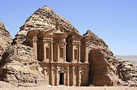
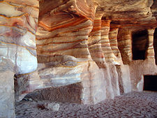
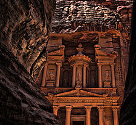

פטרה

ארץ: ירדן עיר: פטרה תאריך בנייה: 800 לפנה"ס
עיר נבטית קדומה המפורסמת בארמונות הקבורה שלה החצובים באבן החול של הרי אדום, ומכאן שמה בעברית "הסלע האדום". פטרה שוכנת בדרום ירדן, כמאה ק"מ צפונית לאילת. היא מכונה גם "העיר הוורודה" בפי התושבים המקומיים בשל גוון המסלע.


פטרה מפורסמת כיום בזכות המבנים החצובים במורדות ההר שנשתמרו היטב עד ימינו. הידוע מכולם הוא קבר מלכותי מפואר בשם "אוצר פרעה" (אלחזנה), שלצורך פיסולו הוזמנו אומנים מאלכסנדריה. גובהו 33.77 מטר ורוחבו 24.90 מטר, והוא נחצב מלמעלה כלפי מטה. את הרווח שבין העמודים הצדדיים מפארים פסלי ענק של רוכבי סוסים.